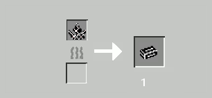
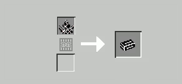
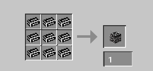
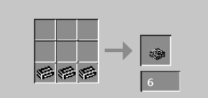
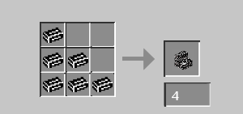

Manganese ore
Manganese ore can be finded between Y=10 and Y=100. It spawn in veins of +/- 5 ores,
and there are on average 30 veins per chunk (more than coal.)
It can be mined with a stone pickaxe or better. It drops 1 raw manganese (no drop if mined with another tools).
Technical values
- Hardness: 1.5
- Blast resistance: 10
- Light level: 0
- Light opacity: 15
- Slipperness: 0.6
- Jump factor: 1
- Speed factor: 1
Raw manganese
Raw manganese is the base ingredient to obtain manganese ingot. It has no other use.
Manganese ingot
Manganese ingot is the base ingredient to obtain manganese block, slab, and stairs.
Building blocks in manganese
- Manganese block
- Hardness: 2
- Blast resistance: 10
- Light level: 0
- Light opacity: 15
- Slipperness: 0.6
- Jump factor: 1
- Speed factor: 1
- Manganese slab
- Hardness: 2
- Blast resistance: 8
- Light level: 0
- Light opacity: 0
- Slipperness: 0.6
- Jump factor: 1
- Speed factor: 1
- Manganese stairs
- Hardness: 2
- Blast resistance: 8
- Light level: 0
- Light opacity: 0
- Slipperness: 0.6
- Jump factor: 1
- Speed factor: 1
Crafts
Manganese ingot


Manganese block

Manganese slab

Manganese stairs

IDs
- ore_pack:manganese_ore
- ore_pack:raw_manganese
- ore_pack:manganese_ingot
- ore_pack:manganese_block
- ore_pack:manganese_slab
- ore_pack:manganese_stairs